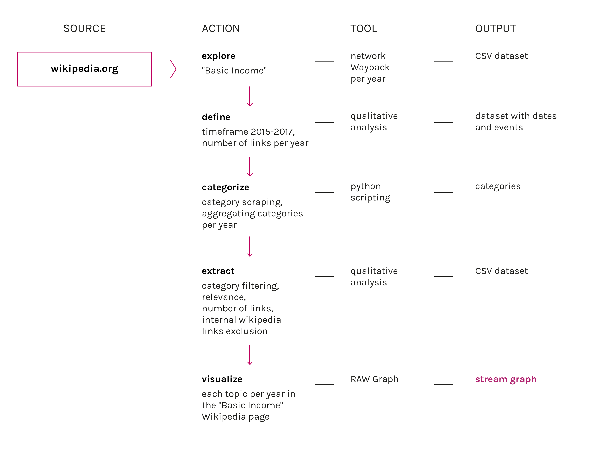

Description
The basic income wikipedia page first appeared in 2004, on august 24.
Since then, the page grew exponentially, it counted 683 words and 4,129 characters back then, and now it’s at
8,113 words and 52,304 characters.
It changed a lot douring the years, and had its peak in 2015. The first surge was in 2009, like a reaction to the
crisis.
This visualization shows the connection that the Basic Income Wikipedia page built during years.
Those are just links pointing to other wikipedia pages, showing how the network grew over 13 years.
During the years from 2004 to 2012 there were just yearly page saves, so we could only get one dataset each year.
From 2013 we could scrape every 3 months, getting an higher definition.
The majority of links pointed to other languages Basic Income wikipedia pages, but in this visualization they were
left out.
Protocol

Wikipedia offered us just 4 years of changes, even if the page was born in 2004. From the revision history we got
the saved page from 2013 to 2017, and we decided to scrape every 4 months in 3 set dates. We got the revision that
was close to the 1st of april, 1st of august and 1st of december of each year, and, scraping, we extracted all
outlinks. From that, we refined our dataset leaving only wikipedia-pointing links and we saved it in a .csv file.
For the years before 2013, we used “wayback network per year”, a digitalmethods tool that can scrape the wayback
machine for inside and outlinks. From that, we could refine a dataset similar to the one we created using
wikipedia revision history.
That way, having the same “scale”, we could compare every year.
Data
Timestamp: 01/1/2004 - 15/11/2017
Data source: Wayback network per year
Download data (162kB)
Our data comes entirely from wikipedia, but we got it from different sources.
Wikipedia allow us to see all the changes the page has been through from the beginning, but the "Basic Income"
wiki page was redirected from the "Guarantee Minimum Income" in 2013, so it was not possible to get data before
that time using just wikipedia. For the older data, we used a scraper for the "internet Archive Wayback Machine",
but we could only get data from year to year.
For Wikipedia Change History we used a simple google plugin "Scraper" by dvhtn, that allowed us to get all link
from said webpages and paste it directly into an OpenRefine project.
The Wayback gave us directly a node/edges gephi file, that we had to refine to build our own dataset.
The final dataset consisted of 3989 lines.